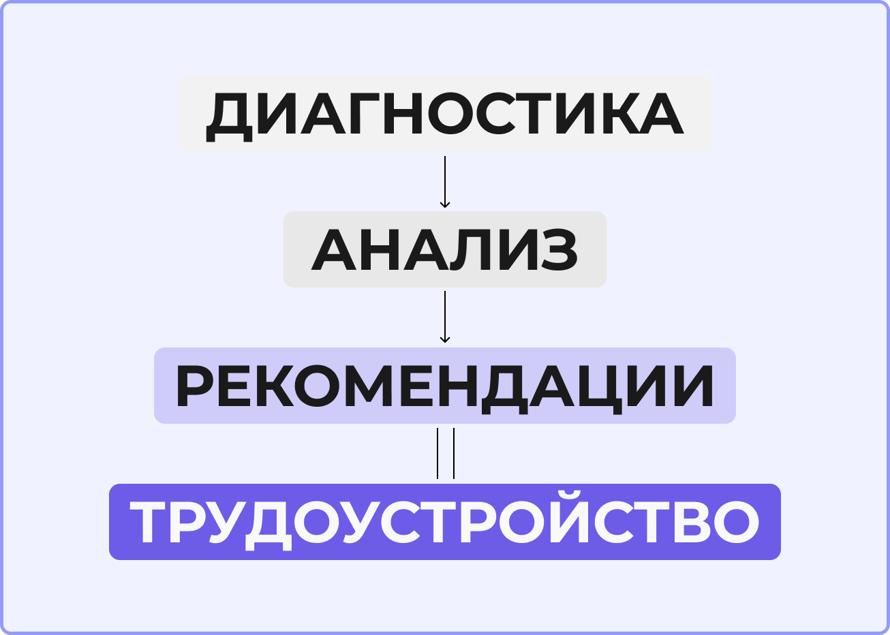

О проекте
Как мы помогаем студентам развивать компетенции
Что мы делаем?
Проект «Карта компетенций для выпускника» создан для того, чтобы помочь студентам Московского Политеха осознанно развивать свои гибкие навыки и успешно конкурировать на рынке труда.
Проблема, которую мы решаем
Студенты часто не знают свои сильные и слабые стороны. Тестирование от РСВ показывает пробелы, но не даёт ответа на вопрос «как развиваться?». На платформе «Россия – страна возможностей» представлено всего 11 курсов. Наш проект собрал уже 16 направлений.
Как это работает?
- Диагностика — студент проходит тестирование в Центрах компетенций РСВ
- Анализ — мы помогаем интерпретировать результаты
- Рекомендации — персонализированные материалы для развития
- Трудоустройство — паспорт компетенций загружается в hh.ru

Цели проекта
- Повысить лояльность студентов к прохождению тестов РСВ
- Увеличить процент прохождения курсов от РСВ
- Предоставить понятный цифровой инструмент для оценки и развития компетенций
Целевая аудитория
Наш проект помогает разным студентам — от активных лидеров до тех, кто пока в поиске себя.
Катя, 19 лет
Образ жизни: Студентка 2-го курса факультета урбанистики. Активистка студенческого совета, ведёт группу в ВК, общается с администрацией.
Цели: Укрепить личный бренд, систематизировать навыки для резюме, получить инструмент для вовлечения других студентов.
Боли: Накопились сертификаты, но нет цельной картины для резюме. Нет времени на длинные курсы.
Артём, 20 лет
Образ жизни: Студент 3-го курса ИТ. Участвует в хакатонах, читает профильные блоги. Активен в Telegram-каналах про программирование.
Цели: Найти стажировку, получить структурированную оценку компетенций, выявить «слепые зоны» для прокачки.
Боли: Боится упустить время. Не уверен, какие инициативы вуза действительно ценны, а какие — просто «галочка».
Иван, 18 лет
Образ жизни: Студент 1-го курса технического направления. Не до конца понимает, подходит ли ему выбранная специальность. Периодически смотрит Telegram-каналы, но быстро теряет интерес.
Цели: Понять, какие навыки нужны для карьеры. Найти простой путь развития без лишней информации. Определиться с профессиональным направлением.
Боли: Чувствует растерянность и неуверенность. Не понимает, какие инициативы полезны. Боится потратить время впустую. Сложные инструкции вызывают раздражение.
Наш проект помогает каждому из них: Кате — структурировать опыт, Артёму — найти стажировку, Ивану — не потеряться и понять, куда двигаться.